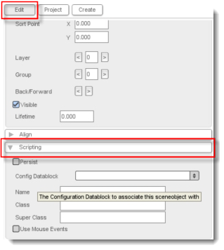
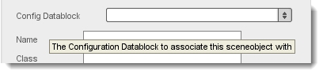
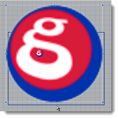

Torque 2D - Configuration Datablocks
When creating a large scale project, any repetitive task you can cut out of your work flow is a good thing. Thanks to config datablocks and behaviors, the setting up of multiple similar or identical objects is very simple. Config datablocks are basically saved sets of parameters that you can apply to any object in the Level Builder. They are handy because when creating a great deal of identical objects, you only need to write their parameters once and then reference those parameters (via a config datablock) as many times as you need. This tutorial is going to go through the creation of a config datablock and show you how they can be used to make repetitive tasks much less time-consuming.
The first thing we are going to do is create a config datablock and then later access it using the Level Builder. We are going to create this config datablock in our TutorialBase project, since it is a default project all T2D owners will have access to. So, our first step is to navigate to our games/TutorialBase/game/gameScripts folder. In this folder we have a file called datablocks.cs. This file will contain our config datablock. Config datablocks can be created in any part of our code, however datablocks created in this script will automatically be loaded saving you the trouble of creating a separate file that has to be manually executed. Inside this file we are going to create a very simple config datablock that is just going to show you how they work. Add this code to your datablocks.cs file:
|
datablock t2dSceneObjectDatablock(TestConfig) { Layer = 1; Size = "100 100"; }; |
This code just specifies a config datablock with the name TestConfig that sets the object's layer to 1 and its size to 100 along both the X and Y.
Now that we have our config datablock created, open up Torque 2D. Next, if your T2D project is not already open, navigate to File-> Open Project and open your TutorialBase project. Once it's loaded we should begin testing of our datablock. First grab the static sprite of the GarageGames logo and drag it onto our scene. Next, we will want to assign our sprite a config datablock.
Config datablocks can be set in the Scripting rollout in the Edit tab of the Level Builder.
|
 |
As you can see to the left, when you expand this dropdown, we can see the datablock we created in the last step. Select this datablock so it appears in the window of the collapsed list.
 |
Now, not every object you drag into the scene will have this config datablock assigned to it. Drag in another GarageGames logo, this time without assigning the config datablock.
|
 |
You should immediately notice the difference between your object that has a config datablock assigned to it, and your object that does not have one assigned to it. However, let's say that you assigned an object with a datablock, but didn't want all of the parameters assigned by the datablock to be applied to your object. Luckily, this is no problem since the parameters of a config datablock can be overridden once they are set. So if you now manually set the object's size, it will override the config datablock's size. |
Config datablocks are a very efficient way to assign parameters to multiple objects while only having to write them in code once. They are also flexible enough that you can override them if you need. Using config datablocks well can save you a lot of time and coding by eliminating repetition; allowing programmers to give focus to other essentials.